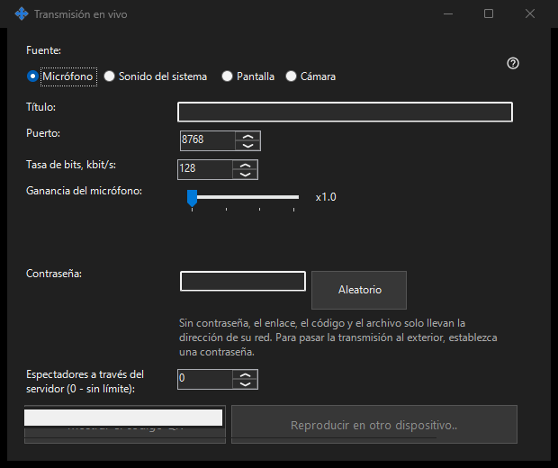

Emisión en directo
Para qué sirve
Comparte pantalla, una ventana, cámara, micrófono o audio del sistema desde Share Manager. Abre una emisión en el visor de 64 bits mediante enlace, código o archivo .fmsbcast. La captura empieza solo al pulsar Iniciar.


En este orden
Elige la fuente, después monitor o ventana individual, o cámara y modo. Antes de Iniciar revisa título, contraseña, audio y acceso LAN. Los espectadores reciben la imagen y sonido elegidos, incluido contenido privado visible. Copia el enlace o guarda .fmsbcast una vez en directo. Detener finaliza la sesión; cerrar la ventana capturada también termina su emisión.
Los elementos
Emisión en directo
Elige la fuente, después monitor o ventana individual, o cámara y modo. Antes de Iniciar revisa título, contraseña, audio y acceso LAN. Los espectadores reciben la imagen y sonido elegidos, incluido contenido privado visible. Copia el enlace o guarda .fmsbcast una vez en directo. Detener finaliza la sesión; cerrar la ventana capturada también termina su emisión.
Ajustes del gestor · Ajustes de uso compartido SFTP · Ajustes del servidor de intercambio